Libby
A native Spotify client with gorgeous modern design and a proper library.
Your music, beautifully at home on iOS. Browse the collection you’ve built, rediscover your favorites, and settle into a Now Playing experience with a little more personality.
A proper library.
Your songs, artists, and albums, each with a place of their own. Sort your collection and switch between lists and artwork grids to find just what you’re looking for.
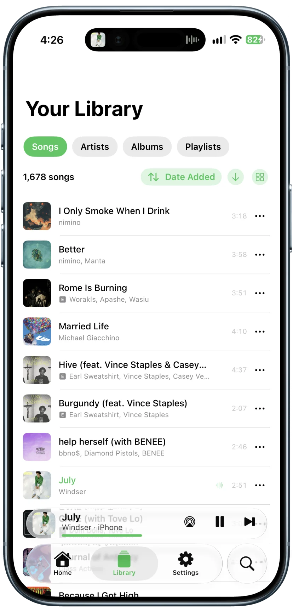
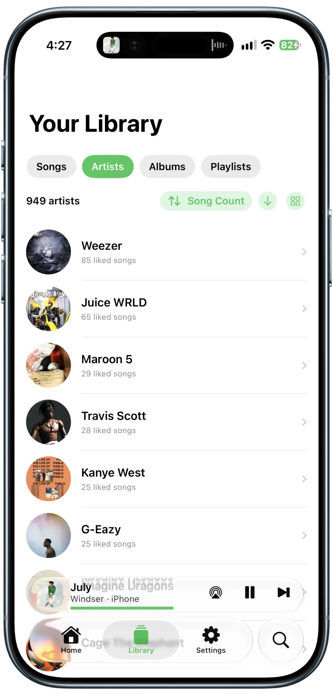
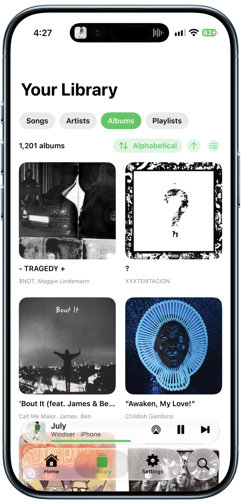
The music you love, together.
Find your liked songs grouped by artist and album. Enjoy the tracks you’ve saved, with a link to the full album when you want to hear more.
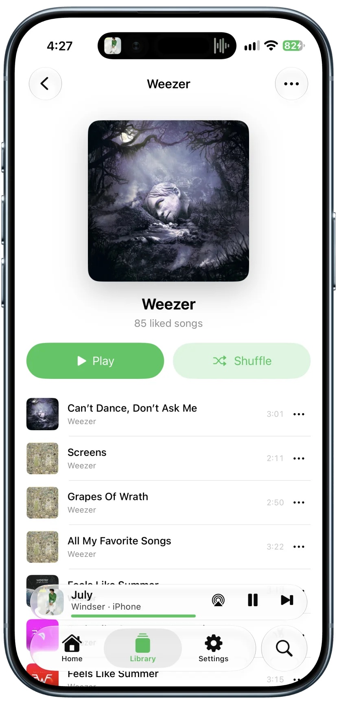
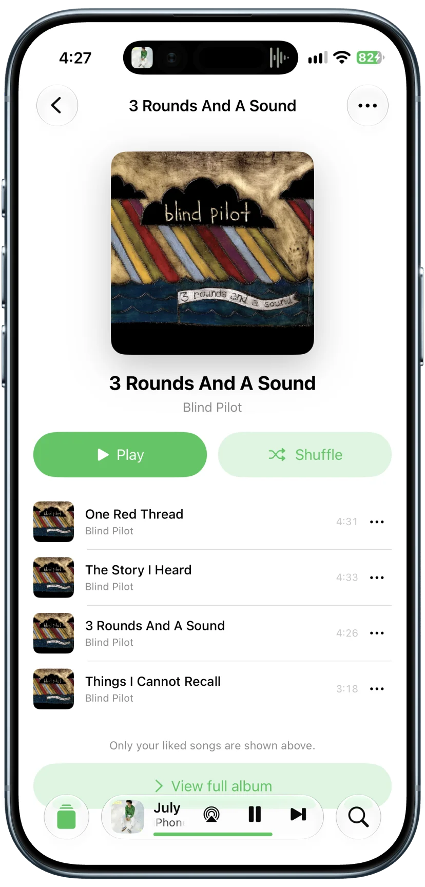
Find your next listen.
Pick up a favorite from Home, get into a playlist, or search for a song, artist, or album. Your next listen is always close by.
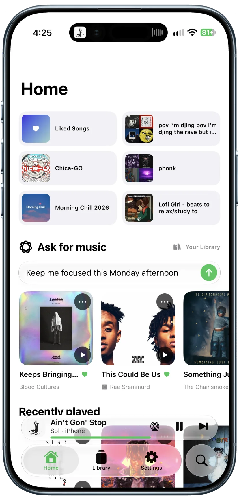
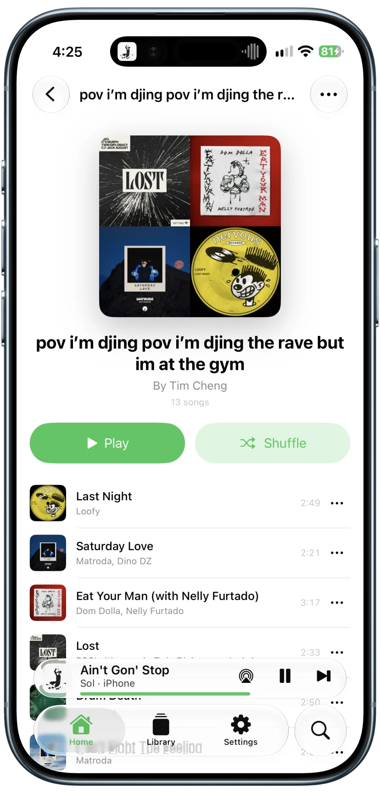
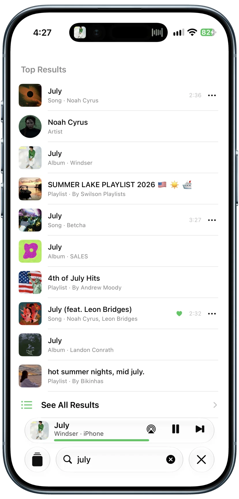
Enjoy every spin.
An expressive player puts your music front and center. See what’s coming up in the queue, or turn off the vinyl view to let the album artwork take the spotlight.
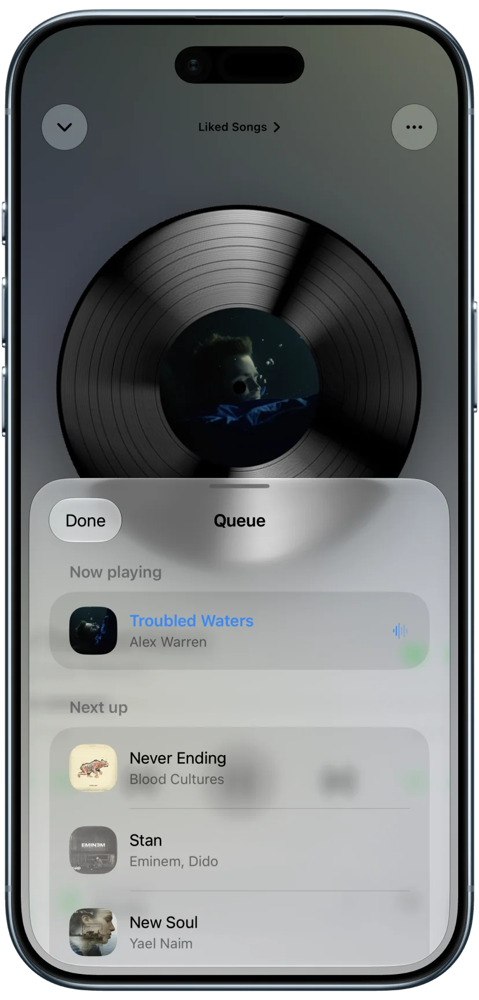
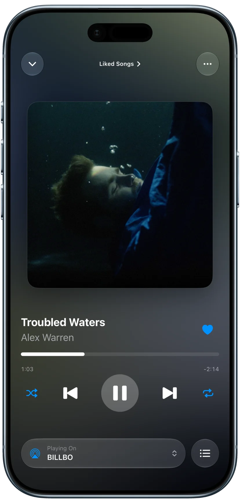
Make yourself at home.
A native interface that feels right in light or dark mode, with customizable accent colors to make it yours.
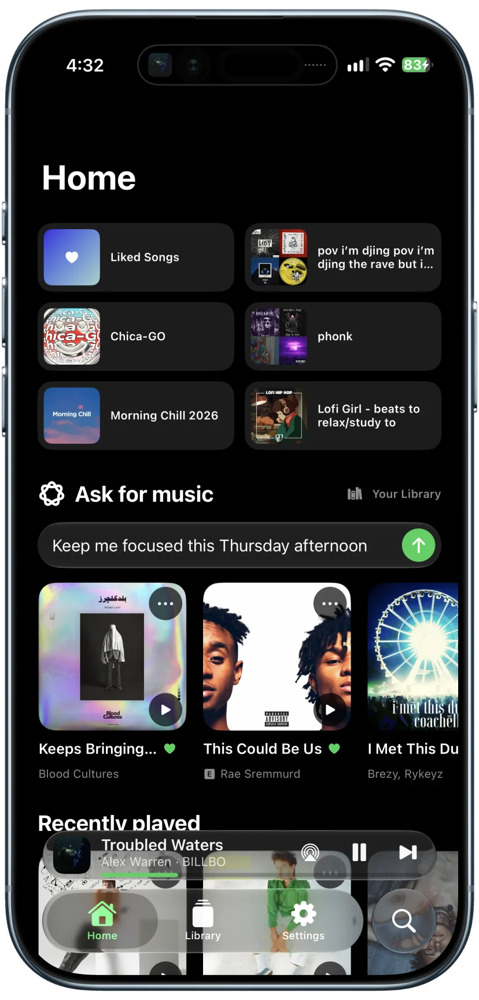
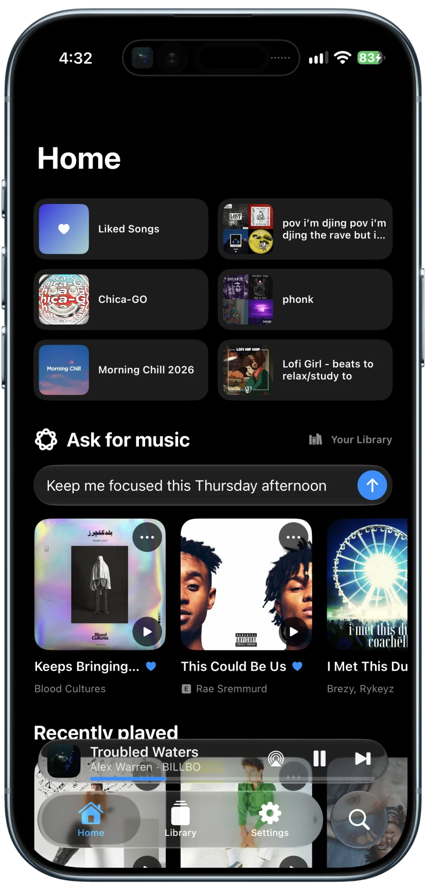
One tap back to Libby.
Libby controls Spotify remotely, so the native Now Playing widget opens Spotify itself. To keep Libby within reach, we added a Dynamic Island shortcut: while playback is active, a single tap brings you straight back to Libby.
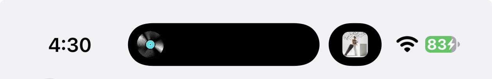
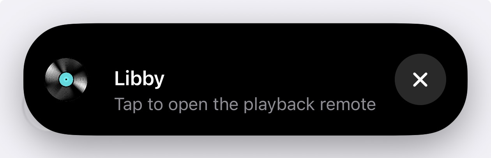